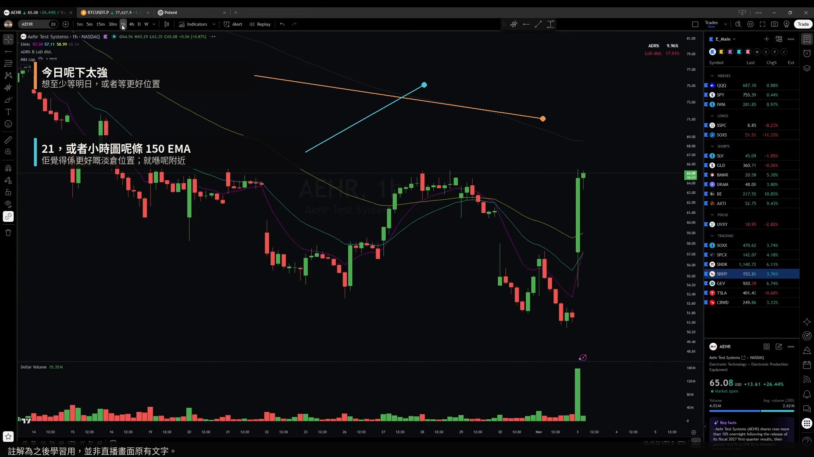

概要
今日太強，想等更好嘅淡倉位置
1:20:54 聊天室請佢睇 AEHR。Whisper 把代碼聽成 ADHR，本頁按畫面更正。發問者話 heading into stage 3 or 4，同埋 at the multi-confluence short place；呢兩句係發問者嘅讀法。畫面約 1:21:19 先到 AEHR 1 小時。佢話今日睇落有啲太強，想至少等明日，或者等 21 EMA，「like this 150 EMA on the hourly charts」，覺得係更好嘅淡倉位置。更完整嘅入場拆解喺後面科目十五。
圖一 · 主圖
AEHR 1 小時：今日太強，更好位置更高
直播 1:21:36

原話
Okay, take a look at AEHR and direct the price action there a bit. I think it's heading into stage 3 or 4, but I want to hear your thoughts. It is at the multi-confluence short place too.
睇下 AEHR，同呢度嘅價格行為。我覺得佢行緊入階段三或者四，想聽你點睇。佢亦喺一個多個匯合嘅淡倉位置。
原話
Today looks a little bit too strong. Maybe I think I will wait for tomorrow maybe at least, or at the 21 EMA, like this 150 EMA on the hourly charts. I think it's a better level to short, but I don't know. Probably today will not be the best day for shorts.
今日睇落有啲太強。或者我想至少等明日，又或者等 21 EMA，即係小時圖呢條 150 EMA。我覺得呢個係更好嘅淡倉位置，但我唔知。今日可能都唔係做淡最好嘅日子。
點樣讀
1 小時圖見到當日升勢仍然強。佢沒有接納或者反駁發問者嘅階段三／四，只係回應位置：今日太強，想等明日，或者等更高嘅均線。
「at the 21 EMA, like this 150 EMA on the hourly charts」係同一句裏兩個講法。圖例冇印周期，本頁唔會指定邊一條線就一定係 21 或者 150，只標口中更好嘅淡倉位置就喺呢附近。
附註
注意事項
- 畫面代碼係 AEHR（Aehr Test Systems）。Whisper 把代碼聽成 ADHR，把 Today 聽成 The date，把 confluence 聽成 conference。本頁按畫面同語境更正。
- 階段三／四同 multi-confluence 係發問者嘅讀法；佢冇在呢一段確認呢兩個標籤。
- 圖例多數只有顏色同數值，冇印均線周期。本頁唔會把某條彩線寫死成 21 或者 150。
- 更完整嘅 AEHR 入場拆解見科目十五（2:11:11–2:18:41）。
- 畫面睇唔到成交價、倉位大細或者損益，所以唔寫死呢啲數字。